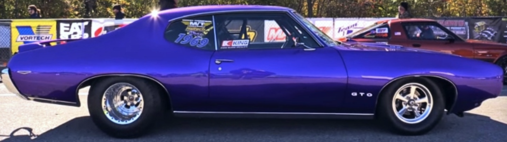

Challenges
Lab 9 is being used to better our understanding with CSS, and customize margins, borders, colors, fonts, etc. within our webpage.
Problems
CSS is starting to get more complicated, the more we progess into coding. So, a few problems still arise here or there, like spacing or implicating the wrong number or name for a certain color or border.
Results
This webpage is the result of this Lab 9, hope you enjoy the creativity!
